Theses functions are created to make the calculating and displaying of residuals easy and quick. It will get the raw, standard and studentized residuals from the lm object.
Arguments
- lm
A linear model object created by the
lm()function- x
A
residuals.datalist object- ...
ignored by this method
Examples
mtcars.mod <- lm(mpg ~ wt, data = mtcars)
residuals <- residuals_list(mtcars.mod)
plot(residuals)

print(residuals)
#> fitted raw standardized studentized
#> 1 23.282611 -2.2826106 -0.76616765 -0.76076977
#> 2 21.919770 -0.9197704 -0.30743051 -0.30274050
#> 3 24.885952 -2.0859521 -0.70575249 -0.69972329
#> 4 20.102650 1.2973499 0.43275114 0.42681176
#> 5 18.900144 -0.2001440 -0.06681879 -0.06570059
#> 6 18.793255 -0.6932545 -0.23148309 -0.22779587
#> 7 18.205363 -3.9053627 -1.30552216 -1.32167204
#> 8 20.236262 4.1637381 1.38889709 1.41169344
#> 9 20.450041 2.3499593 0.78392687 0.77876838
#> 10 18.900144 0.2998560 0.10010803 0.09844187
#> 11 18.900144 -1.1001440 -0.36728706 -0.36192838
#> 12 15.533127 0.8668731 0.29288651 0.28837628
#> 13 17.350247 -0.0502472 -0.01683789 -0.01655496
#> 14 17.083024 -1.8830236 -0.63159969 -0.62515414
#> 15 9.226650 1.1733496 0.42296071 0.41709709
#> 16 8.296712 2.1032876 0.76979873 0.76444774
#> 17 8.718926 5.9810744 2.17353314 2.32816206
#> 18 25.527289 6.8727113 2.33490215 2.53780106
#> 19 28.653805 1.7461954 0.61035691 0.60385911
#> 20 27.478021 6.4219792 2.21708271 2.38384376
#> 21 24.111004 -2.6110037 -0.87964013 -0.87622897
#> 22 18.472586 -2.9725862 -0.99313634 -0.99290217
#> 23 18.926866 -3.7268663 -1.24418015 -1.25610443
#> 24 16.762355 -3.4623553 -1.16279098 -1.16991451
#> 25 16.735633 2.4643670 0.82771968 0.82326228
#> 26 26.943574 0.3564263 0.12244407 0.12041613
#> 27 25.847957 0.1520430 0.05177187 0.05090396
#> 28 29.198941 1.2010593 0.42254270 0.41668241
#> 29 20.343151 -4.5431513 -1.51549710 -1.55056010
#> 30 22.480940 -2.7809399 -0.93086929 -0.92873434
#> 31 18.205363 -3.2053627 -1.07151943 -1.07426703
#> 32 22.427495 -1.0274952 -0.34388215 -0.33877056